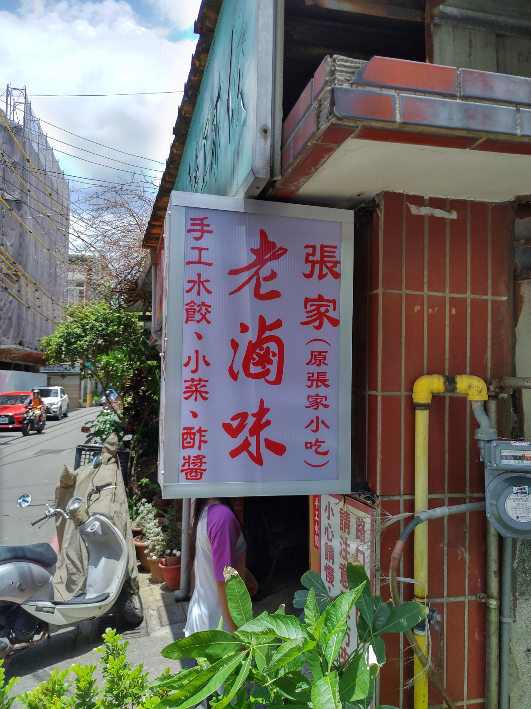
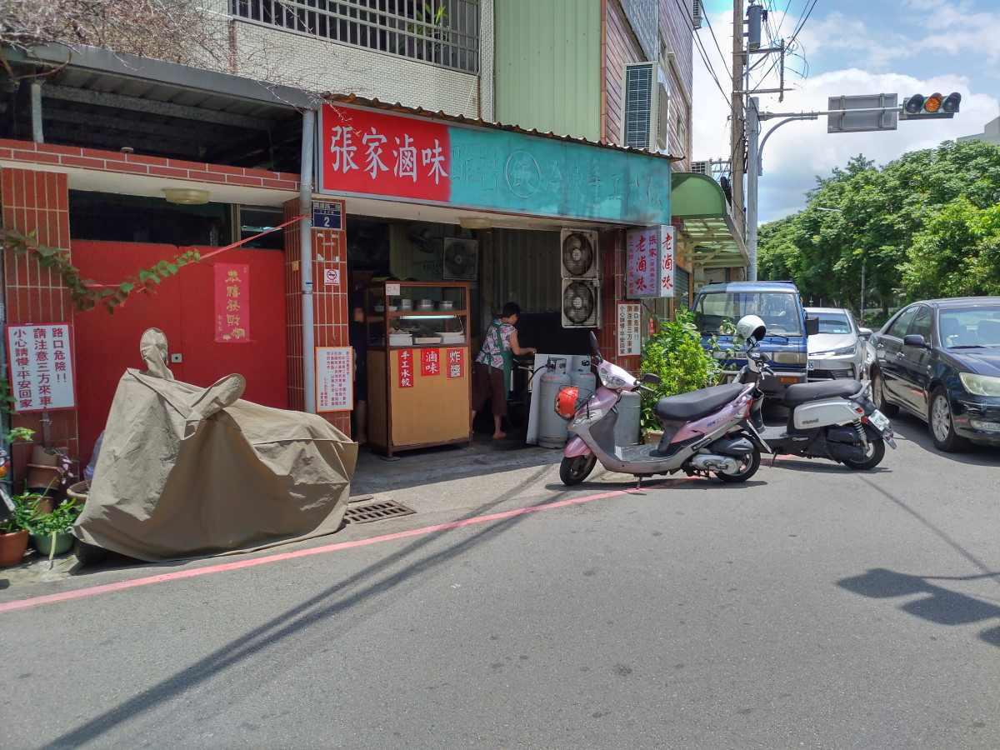
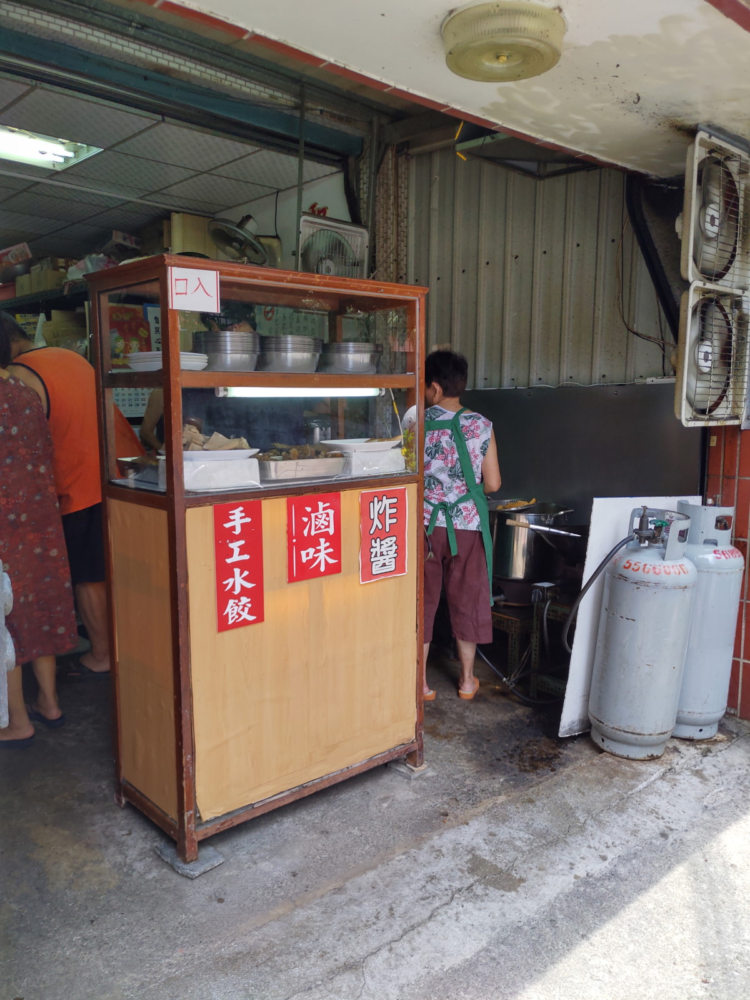
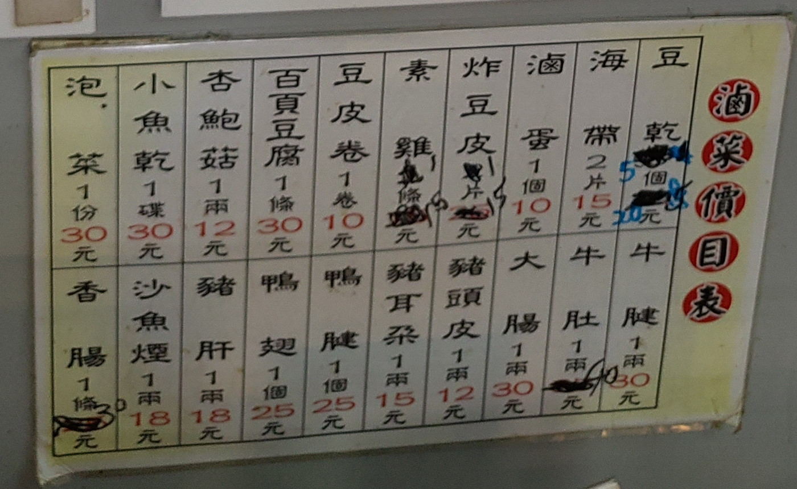
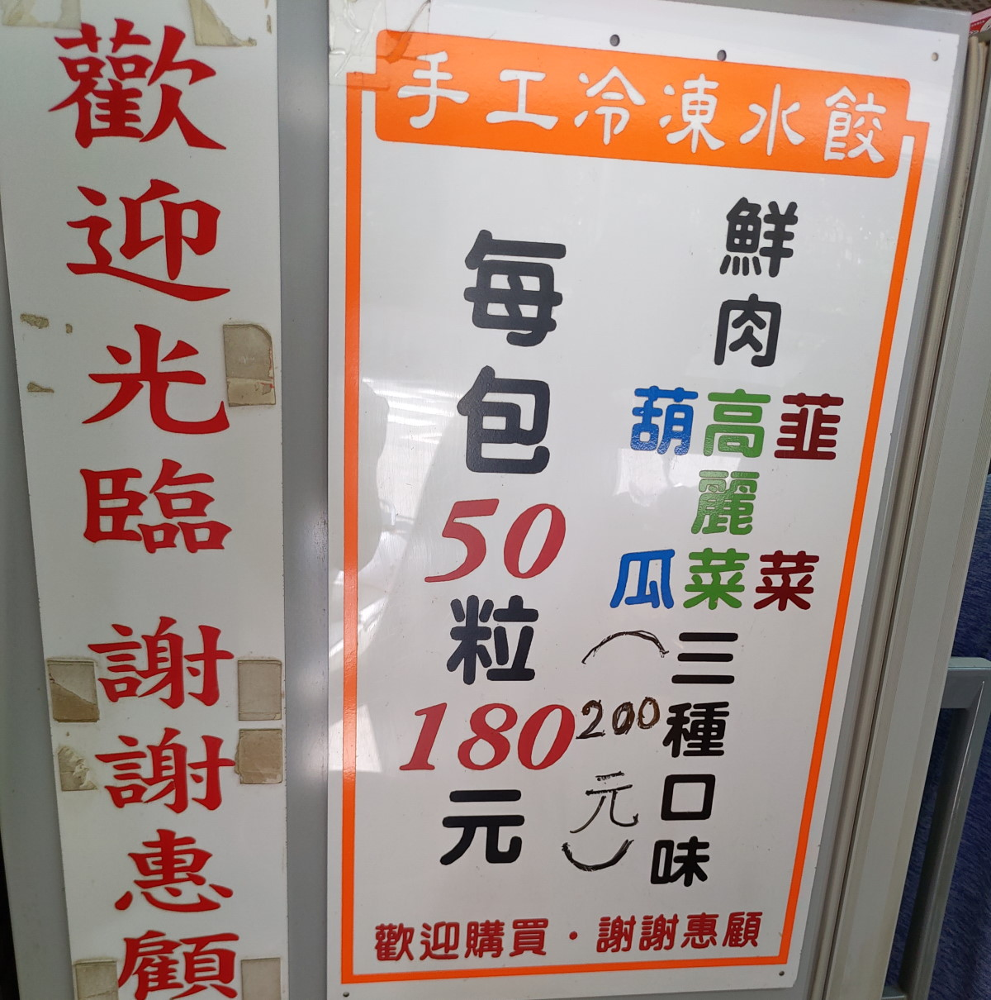
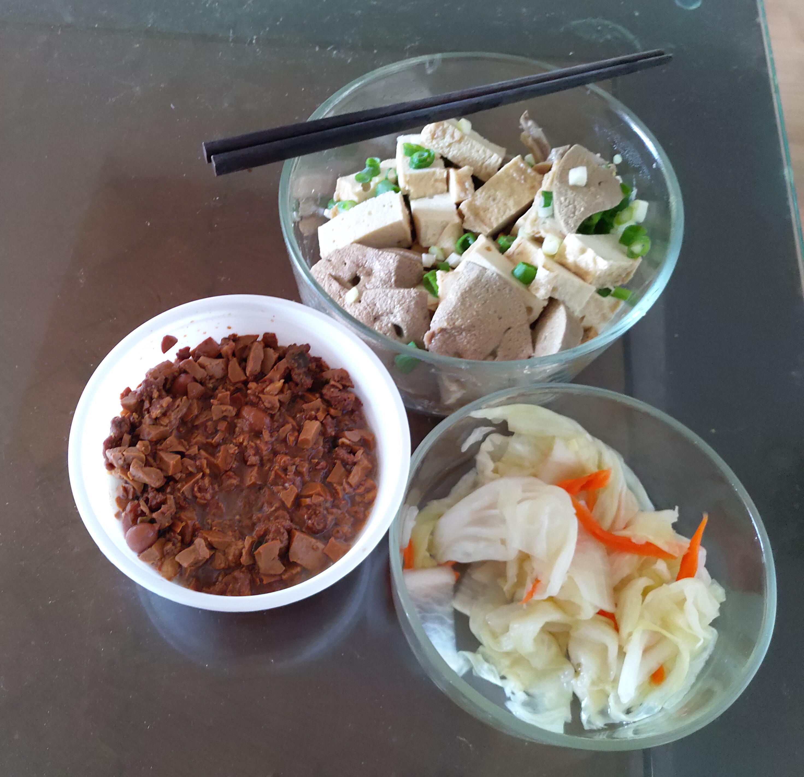

[新竹] 張家老滷味
| 餐廳名稱: | 張家老滷味 |
|---|---|
| [非官方網站] ( https://www.facebook.com/pages/%E5%BC%B5%E5%AE%B6%E8%80%81%E6%BB%B7%E5%91%B3/128894230623955 ) | |
| 地 址: | 新竹市鐵道路二段292巷2號 |
| 營業時間: | 11:30 ~ 13:00 16:30 ~ 20:00 |
| 通常 週一、週四、週日 休息，也有可能另外調整。 | |
| 電 話: | 035424713 |
這間 張家老滷味 是一間新竹老店，本來在別的地方有店面，當時賣麵、滷味、水餃 等，是一間標準的北方麵館，
能讓客人內用的。
也許是年紀漸長或是其他原因，搬回自家住宅，精簡成賣滷味，冷凍水餃，炸醬 等外帶
的食物，所幸當年口碑不錯，累積許多熟客，即使地點有點偏僻，仍然很多人來買。
店門口的景色。當天星期六，車一台一台來，一兩種滷味馬上就空了。  
店內非常窄小，門口一個放滷味的櫃子，再往裡面一點就是廚房。 
店名是 張家老滷味，滷味就是主打的商品。 
水餃之前買過一次，口味稍微輕淡，不過一般都會再調個 大蒜醬油 搭配，所以其實也還好。 
今天買了 滷味、泡菜、炸醬。 先講比較簡單的炸醬，自己煮麵後，加上這個炸醬，就是炸醬麵了， 這個炸醬 口味適中，比較特殊的是 加了花生，一般炸醬麵是沒花生的，不過他加了花生，也不會太突兀， 還行。
泡菜 蠻濕潤的，酸酸的，算是中上的佳作。
滷味就是重頭戲了，做了很多功課，常被誇獎的有粉肝、豬肚、百頁、大腸，今天都搶到了。 首先它非常香，在車上就飄出香味了，但回到家一吃，輕淡口味的人應該是能接受， 我這種重口味的，稍微覺得不鹹。 倒了一小碗知名的純釀造黑龍醬油膏，哇，沾著吃非常好吃。

張家老滷味，在自家經營，省下房租有回饋消費者，所以滷味又便宜又好吃，加上醬油膏更好吃， 晃到附近，蠻推薦過來買個滷味再走。